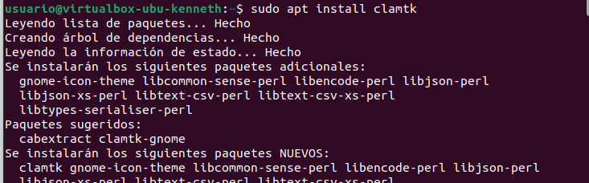
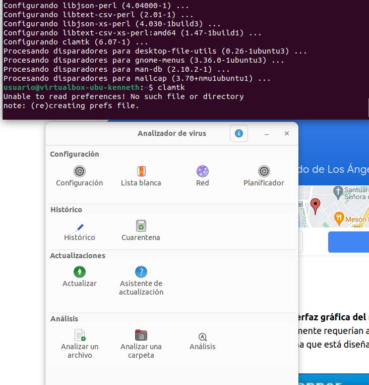
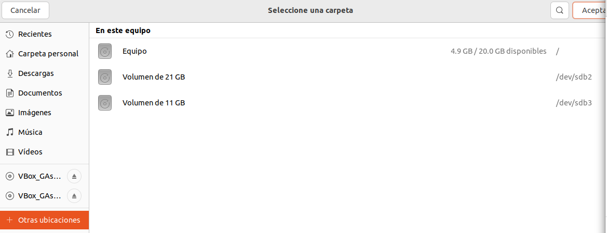
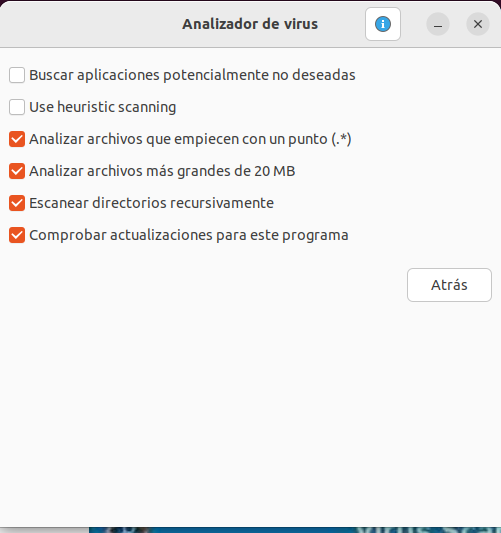

No hay muchas opciones de antivirus gratuitos en Ubuntu. Y de todas formas es un sistema relativamente seguro: al no ser tan extendido, la mayoría de los virus están pensados para Windows. Así que en esta ocasión hablaremos solo de una opción: ClamTK, la versión con interfaz gráfica de ClamAV.
ClamTK y ClamAV son lo mismo, pero el segundo solo se puede usar con comandos y el otro tiene interfaz gráfica. Por eso nos centraremos en él.
Una de las ventajas de Ubuntu (y las distribuciones Linux en general) sobre Windows, es que prácticamente todo se instala desde la terminal. Además Ubuntu, que está muy enfocada a usuarios novicios, lo tiene aún más fácil que otras distros.
Para realizar la instalación, primero abrimos la terminal. Podemos hacerlo con ctrl+alt+t o bien con click derecho y abrir terminal aquí. Hay otras formas, pero estas son las más fáciles y rápidas.
Una vez con la terminal abierta, escribimos: sudo apt update si no lo hemos hecho antes. Nos pedirá la contraseña, la introducimos y pulsamos S o Y en función del idioma de nuestro sistema. Cuando el proceso acabe escribimos sudo apt install clamtk.
Listo, ya tenemos ClamTK instalado. Podemos abrirlo escribiendo clamtk en la terminal, o bien en el menú de programas instalados que aparece en la esquina inferior izquierda.
Las opciones son bastante autodescriptivas. Podemos hacer click en Analizar una carpeta y seleccionar una carpeta para analizar. Incluso podemos seleccionar el directorio raíz / para analizar la totalidad del sistema.
Luego seleccionamos las opciones para el análisis. Cuando acabemos, el análiss dará comienzo.
